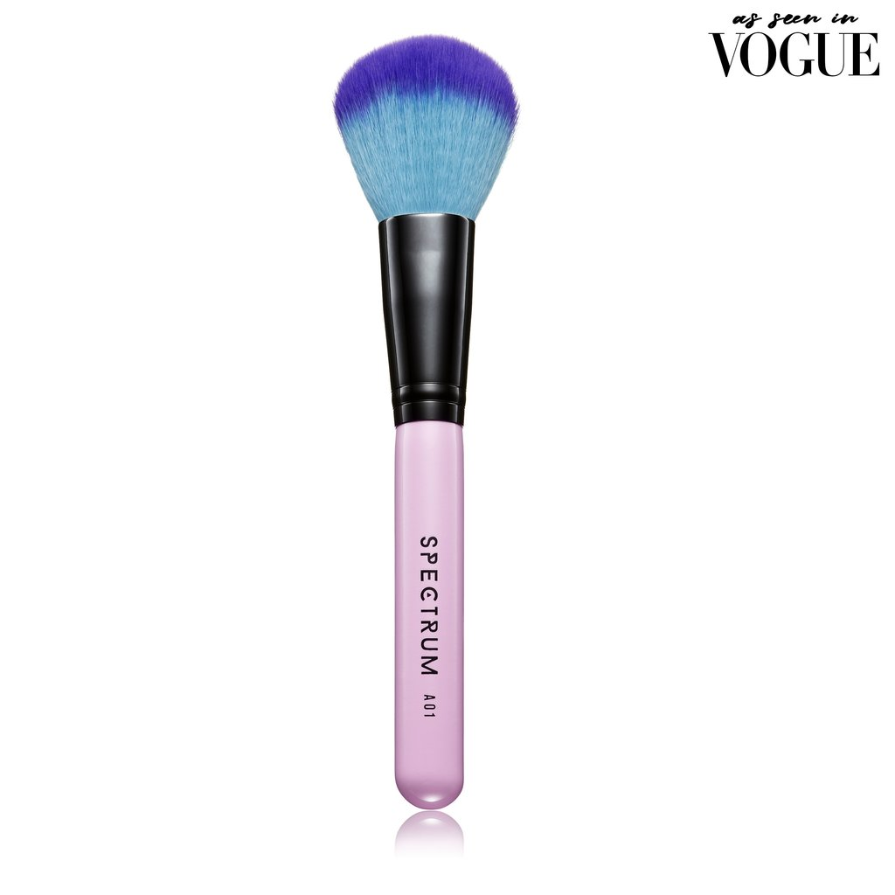

Nach einigem umherwandern hörst du ein "Psssst!" von einer Treppe an der du gerade vorbei gelaufen bist. Du drehst dich um und siehst eine kleine Gestalt. Er ist zwar umhüllt von einem Gewand, aber du erkennst sofort um wen es sich hier handelt. Tyrion Lannister! Du erzählst ihm, dass er einer deiner Lieblinscharakter in Game of Thrones ist. Er schaut dich mit vewirrten Blick an.
Ich habe keine Ahnung wovon du sprichst kleine. Du scheinst wohl geistig nicht auf der Höhe zu sein, wie es scheint. Aber lass mich dir eins sagen. Lass dich durch deine eigenen Schwächen nicht unterkriegen, sondern trage sie wie eine Rüstung und niemand kann dir damit schaden.
Dieser Zwerg auf dem Dreirad ... Ich vermute er gehört zu dieser gesichtslosen Bande aus Bravos, also sei auf der Hut. Ich haue hier ab. Eines gebe ich dir dennoch mit auf den Weg. Ein weiser Mann schreib einst:
"When he opened the door, the light from within threw his shadow clear across the yard, and for just a moment Tyrion Lannister stood tall as a king."
George R. R. Martin
batman
Hier noch etwas für deinen weiteren Weg. Ich habe es Cercei geklaut ;)
Glückwunsch. Du hast dein weiteres Geschenk erhalten!
×
Domed Powder Brush

Spectrum A01
The super soft bristles of the Domed Powder Brush are ideal for applying a fine layer of translucent powder, or a dusting of bronzer. A great all round brush to leave in your handbag for touch ups, as it doesn't pick up too much product. Perfect for those on the go.